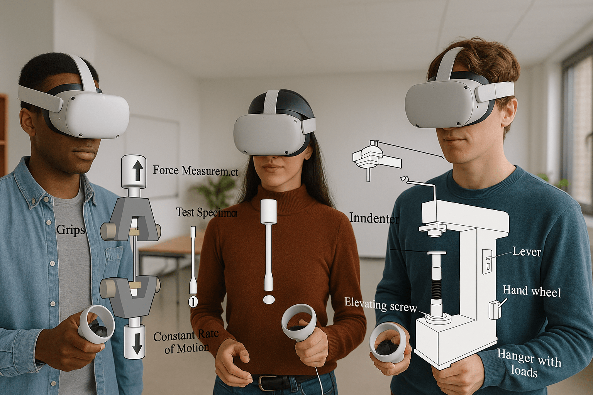

-min.png)
The field of mechanical engineering has always been central to understanding materials and their behaviors under various conditions. Accurate measurements of a material's properties are crucial for everything from designing machinery to ensuring safety in construction.
Traditionally, these measurements were done using physical testing methods. However, with the advent of Virtual Reality (VR), the landscape of mechanical property measurement is undergoing a transformation.
In this article, we will explore how VR technology is revolutionizing mechanical property measurement, focusing on key aspects like Hardness, Tensile Strength, and Compression & torsion stress.
What is Mechanical Property Measurement?
Mechanical property measurement involves determining the physical characteristics of materials. These properties help engineers understand how materials will behave under stress, strain, and other forces. Accurate data on these properties is vital for creating reliable and durable products.
Traditionally, this measurement was done using various mechanical tests that could be both time-consuming and costly.
With VR technology, these tests can now be conducted virtually, providing a more efficient and cost-effective solution for educational institutions and industries. Virtual labs allow students and professionals to perform mechanical property measurements in a safe, interactive, and immersive environment.
We will also look at various VR modules, such as the Brinell Hardness Test, the Vickers Hardness Test, the Universal Testing Machine, and Torsion Testing.
Why Use VR for Mechanical Property Measurement?
Virtual Reality in mechanical engineering is a game-changer. The traditional methods of conducting hardness, tensile, and stress tests are not only expensive but also require specialized equipment. VR for mechanical property measurement offers several advantages:
● Cost-Effectiveness: No need for physical samples or expensive equipment.
● Safety: Students can perform tests in a controlled, risk-free virtual environment.
● Enhanced Learning: Students can visualize and interact with the tests in real-time, improving their understanding of material properties.
● Scalability: VR labs can be scaled to accommodate large groups of students without the need for additional physical infrastructure.

Now, let’s delve into the specifics of the mechanical property tests and how VR simulations can enhance these experiences.
1. Hardness Measurement
Hardness is a material's resistance to indentation, scratching, and wear. It is a critical property in selecting materials for applications that require durability and strength. There are various methods to measure hardness, with Brinell and Vicker being the most widely used.
Brinell Hardness Test in VR
In the Brinell Hardness Test, a steel or tungsten carbide ball is pressed into the surface of the material under a specified load. The diameter of the indentation left is measured and used to calculate the hardness value. The VR simulation of this test allows students to interact with the test setup, adjusting parameters like load and ball diameter. By virtually conducting the test, students can see how different materials respond to the same force, gaining a deeper understanding of material hardness.
Vicker Hardness Test in VR
The Vickers hardness test involves using a diamond pyramid indenter to press into the material. Unlike the Brinell test, which uses a spherical indenter, the Vickers test uses a pyramidal one. The diagonal length of the indentation is measured to determine the hardness value. VR simulations for the Vickers test offer a detailed view of how the diamond indenter interacts with different materials, giving students the chance to practice without worrying about sample damage.
2. Tensile Strength Measurement
Tensile strength refers to the ability of a material to withstand pulling or stretching forces without breaking. It is one of the most important properties for materials used in construction, manufacturing, and engineering design.
Universal Testing Machine in VR
The Universal Testing Machine (UTM) is a device used to measure the tensile strength of materials. It applies a controlled load to a material and measures the elongation until the material breaks. In the VR simulation of UTM, students can virtually load different materials into the machine and observe how the material stretches under tension. This allows them to understand the relationship between tensile strength and material composition.
The VR-based UTM is not limited by the size or availability of physical samples, making it ideal for educational institutions that wish to offer diverse material testing experiences. Students can also repeat tests as many times as needed to understand the variability in material properties.
3. Compression and Torsion Stress Measurement
Both compression and torsion tests are essential for evaluating how materials respond to forces that can either compress them or twist them. These tests are particularly important in assessing materials for structural applications.
Compression Test in VR
The compression test involves applying a compressive load to a material to see how it deforms under pressure. It helps engineers understand the material’s strength in situations where it is being compressed, such as in buildings or bridges.
In a VR compression test, students can manipulate the load and material dimensions to simulate real-world scenarios. They can observe how different materials behave under compression, from yielding to failure, and learn how compression strength is a crucial factor in material selection.
Torsion Stress Test in VR
Torsion testing measures a material's resistance to twisting. It is especially important for materials used in shafts, bolts, and other components that experience rotational forces. The torsion test is carried out by twisting the material and measuring the angle of rotation until failure occurs.
With VR torsion testing, students can perform this simulation without worrying about the wear and tear on physical samples. They can experiment with different materials, twist angles, and loading conditions to gain a comprehensive understanding of how materials behave under torsional stress.
Why VR is the Future of Material Engineering Education
The integration of VR into material engineering represents the future of education. Traditional methods of testing are limited by the availability of materials, equipment, and the time required for setup. With VR, institutions can break down these barriers and provide an interactive learning experience that is scalable and accessible.
_47564.jpg "Nels Madsen")
Here are some reasons why VR is essential for mechanical engineering students:
● Real-Time Data Analysis: Students can analyze data in real-time, providing immediate feedback on their understanding of the material.
● Hands-On Learning: VR simulations allow students to experiment with different materials and test conditions, helping them to learn by doing.
● Diverse Range of Tests: Institutions can offer a wide range of tests, such as hardness, tensile, compression, and torsion, without the need for additional resources or equipment.
● Improved Learning Retention: Studies have shown that interactive learning through VR enhances student engagement and retention of complex concepts.
Conclusion
With the advancements in VR technology, iXR Labs provides an innovative platform for universities and engineering colleges to enhance their curriculum through virtual labs. Our immersive VR modules offer a comprehensive learning experience, allowing students to perform mechanical property measurements like hardness, tensile strength, and stress tests without the constraints of traditional methods.
If you are an educator, academician, or decision-maker in an engineering institution, it’s time to embrace the future of mechanical engineering education. Explore how VR for mechanical property measurement can transform your teaching methods and offer a more dynamic, hands-on learning experience.
Explore iXR Labs today and take the first step toward transforming engineering education in your institution!


.png)